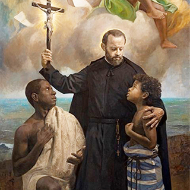

Nombre:
Pedro (Masculino)
Significado:
Piedra, de origen Latín
Celebran:
Los Pedro suelen celebrar el 29-jun:
San Pedro apóstol
En el mundo:
Pedro Claver Corberó
Nació:
26 de junio de 1580 en Verdú, en el
actual España
Falleció:
8 de septiembre de 1654 en
Cartagna, en el actual Colombia
Proceso:
Beatificadoel 16 de julio de 1850 por
Pío IX
Canonizado:
El 15 de enero de 1888 por León
XIII
Celebración:
9 de septiembre
Religioso:
De la Compañía de Jesús